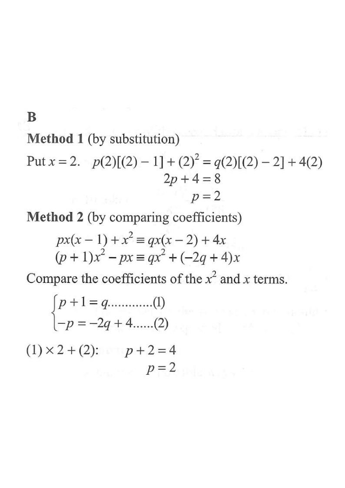

2014MC#3
If $p$ and $q$ are constants such that
$$p\,x(x-1)+x^{2}\equiv q\,x(x-2)+4x,$$
then $p=$
A. 1
B. 2
C. 3
D. 4

Solution — Method 1: by substitution
1
Identify the identity.
Since the two sides are identically equal for every value of $x$,
$$p\,x(x-1)+x^{2}\equiv q\,x(x-2)+4x.$$
We may therefore substitute any convenient value of $x$.
Hint: choose $x$ that makes one of $p$ or $q$ disappear.
2
Substitute $x=2$.
$x(x-2)$ vanishes, so the term with $q$ is killed:
$$p(2)(2-1)+2^{2}=q(2)(2-2)+4(2)$$
$$2p+4=0+8$$
Hint: $x=2$ kills $x(x-2)$; $x=1$ would kill $x(x-1)$.
3
Solve for $p$.
$$2p=8-4=4$$
$$p=2$$
Hint: a single linear equation in $p$ — done.
Solution — Method 2: by comparing coefficients
4
Expand both sides.
$$\text{LHS}=(p+1)x^{2}-px$$
$$\text{RHS}=q\,x^{2}+(-2q+4)x$$
Hint: an identity means the coefficients of each power of $x$ must match.
5
Compare coefficients.
$x^{2}$ term:
$$p+1=q \quad \cdots(1)$$
$x$ term:
$$-p=-2q+4 \quad \cdots(2)$$
Hint: the constant term is $0$ on both sides, so it gives no new information.
6
Eliminate $q$: $(1)\times 2+(2)$.
$$2(p+1)+(-p)=2q+(-2q+4)$$
$$2p+2-p=4$$
$$p+2=4 \;\Rightarrow\; p=2$$
Hint: this matches the substitution method — a good check.
Answer: B — $p=2$
(and then $q=p+1=3$)